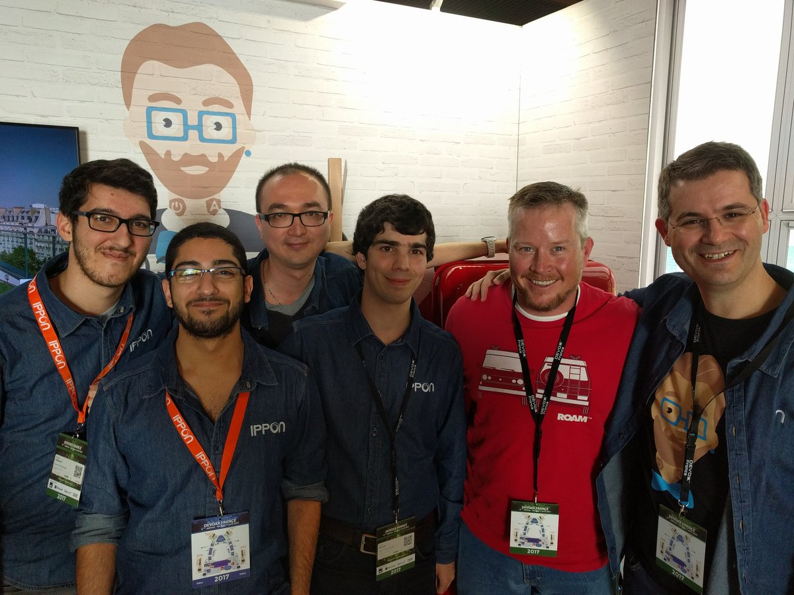

Microservices in practice with JHipster
From dev 💻 to prod 🚀
Pierre Besson
Paris JHipster Meetup #10, October 4th, 2017
Who am I ?
- Java developer @IpponTech
- JHipster core team member
- Favorite technologies:
- ☕ JAVA EE
- 🍃 Spring
- 🐳 Docker
- ☸️ Kubernetes
- 300 collaborators worldwide (France, USA, Australia)
- 4 cities in France : Paris, Nantes, Lyon, Bordeaux
- Specialized in Java, Cloud, Big Data
The JHipster team
https://jhipster.github.io/team/ JHipster
from
monolith
to
microservices
Introducting Microservices
Why microservices?
Microservices patterns
Beware microservice hype
Why microservices
Microservices patterns
 microservices.io/patterns/microservices.html
microservices.io/patterns/microservices.html
Beware microservice hype
JHipster as a microservice platform
JHipster goals
Extending JHipster for microservices
Monolith vs Microservices
Technologies used
The JHipster Microservice Stack
The JHipster Microservice Stack
JHipster goals
- 🏗️ Provide scaffolding for a full stack application
- 💠 Based on modern technologies
- 🔧 Maximize development productivity with tooling
- 📈 Production ready (maintainable, secure, scalable)
Extending JHipster for a microservice architecture
- 🏗️ Generate several independent microservices and front-ends
- ️ ️Work out of the box in dev and in prod !
- Configure service discovery and centralized configuration
- 🔒Provide a distributed security solution
- Be DevOps ready: provide configuration for docker, CI-CD, ...
- Provide management dashboards
- Offer a Monitoring solution to manage production
Monolith vs Microservices
- Monolith:
- One application (Back-end + Front-end)
- Microservice architecture:
- Registry
- API Gateway (proxy + front-end)
- Microservices (back-end only)
- (Optional) OAuth2 server: UAA, Keycloak
Technologies used by JHipster Microservice
Rely on Spring Boot and Spring Cloud abstractions:
- Service discovery: Eureka/Consul
- Centralized configuration: Spring Cloud Config
- ⛩️ API Gateway: Zuul
- 🔀 Client side load balancing: Ribbon
- ⚡ Circuit Breaker: Hystrix
The JHipster Microservice Stack
Added value added over Spring Cloud integrations :
- JHipster Registry: Eureka + Config server + Management
- ⛩️ JHipster Gateway: API management with Zuul and swagger docs
- 🔁 CI-CD Configuration: Pipelines for Jenkins 🤵, Travis 👷
- 🚀 Deployments: Docker 🐋, Kubernetes ☸️, Rancher 🐄
- JHipster Console: logs + metrics + traces (based on ELK and Zipkin)
JHipster Microservice Architecture
 jhipster.tech/microservices-architecture/
jhipster.tech/microservices-architecture/
Show time
🎆Using JHipster to develop microservices
Running the full architecure with docker
Let's go to production
🚀Deploying microservices on Kubernetes
Introduction to microservice monitoring
Problems and solution
The 3 ways of observability
The JHipster Console
The problems
- Distributed system -> More points of failure
- Logs are dispersed in many many log files
- Hard to locate the microservice that caused a problem
- Hard to follow the chain of requests
- 🐇/🐢 Studying latency is hard
- 💂 Resiliency mechanism are hard to configure properly
The solution
Comprehensive monitoring
- Logs : discrete event
- Metrics : numerical values (business or technical)
- Traces : chains of calls in the system (spans)
- Store everything in one place, with proper metadata
- Use a search engine to query and aggregate monitoring data
- Visualize using graphs, build dashboards
- Navigate around
- Create alerts
The 3 ways of observability

The 3 ways of observability

The JHipster Console
www.jhipster.tech/monitoring/
- Setup ELK (Elasticsearch, Logstash, Kibana) + Zipkin in docker
- Enable reporting from any JHipster apps with a few properties
- Logs + metrics forwarded with logback-logstash-encoder
- Traces are forwarded to Zipkin using Spring Cloud Sleuth
- All data is stored in Elasticseach for a certain number of days (Curator)